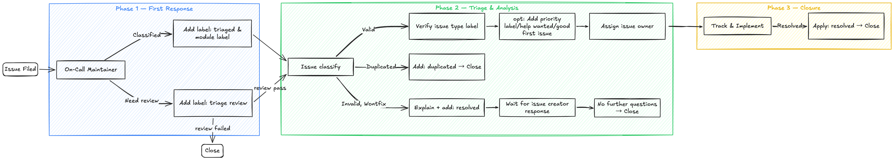

Issue Workflow Guidelines
This document defines the standard lifecycle for Issues in the vLLM Ascend project — from creation through triage, active handling, and final closure. It establishes consistent label usage, owner assignment, and communication expectations to ensure smooth collaboration between contributors and maintainers.
1. Label Categories
1.1 Status Labels
These labels track where an issue stands in the workflow.
Label |
Description |
|---|---|
|
Newly filed or unseen issue awaiting initial assessment by a maintainer |
|
Assessment complete; type, priority, and module have been determined |
|
Blocked on an external dependency or awaiting a response before work can proceed |
|
Issue has been closed — either via a merged PR, or through non-code resolution (e.g., answered question, configuration guidance) |
|
No activity for an extended period; parties have been notified and the issue will be auto-closed if there is no response |
|
A duplicate of an existing open issue or merged PR |
|
The issue report is invalid, unclear, or not reproducible |
|
The issue will not be addressed; as this issue is out of scope, unviable, or intentionally ignored for the foreseeable future |
1.2 Type Labels
These labels describe the nature of the issue.
Label |
Description |
|---|---|
|
Request for new functionality |
|
Request for Comments — significant architectural or design change requiring community discussion |
|
Request to add support for a new model on Ascend NPU |
|
A usage question; no code change may be required |
|
A general question; no code change may be required |
|
Improvements or corrections to documentation |
|
Issues related to setup and deployment |
|
Performance regression, bottleneck, or optimization request |
|
Something is not working correctly or behaves unexpectedly |
1.3 Priority Labels (Optional)
Label |
Description |
|---|---|
|
High priority; should be resolved in the current or next cycle |
|
Normal priority; handled in the regular development flow |
|
Low priority; edge case or minor issue that can be deferred |
1.4 Contribution Labels (Optional)
Label |
Description |
|---|---|
|
A well-scoped, low-complexity task suitable for new contributors |
|
Community contributions are welcome and encouraged |
2. Workflow

Phase 1 — First Response
When an issue is first picked up by the on-call maintainer:
Apply
triagedto signal that the issue can be classified and Add the relevant module label so the issue can be routed to the appropriate module maintainer for detailed triage.Apply
triage reviewto signal that the issue requires more review and specitfic analysis before classification.
Phase 2 — Triage and Analysis
After a thorough review of the issue content:
Verify and apply the appropriate issue type label (
bug,feature request,RFC,question,documentation,installation,performance,new model, etc.).Handle terminal states:
For duplicates, apply the
duplicatedlabel, provide an explanation and a link to the existing issue or PR. If there are no further questions, close the issue.For invalid reports, provide an explanation, apply the
invalidandresolvedlabel, and close the issue. The issue creator can comment or request to reopen if they have further questions.
Optionally apply a priority label (
high,medium, orlow).If community contributions are welcome, apply
help wanted. For well-scoped beginner-friendly tasks, also applygood first issue.Assign the issue owner and replace
triage reviewwithtriagedto indicate that triage is complete.
Phase 3 — Closure
After triage, the issue moves into tracking and implementation:
Keep the issue in progress until it is resolved through a merged PR or another confirmed resolution path.
Once the issue is resolved, apply
resolvedand close it, ideally with a reference to the merged PR or a short explanation of the resolution.If the issue remains inactive for an extended period, apply
staleas the final state before auto-closure.